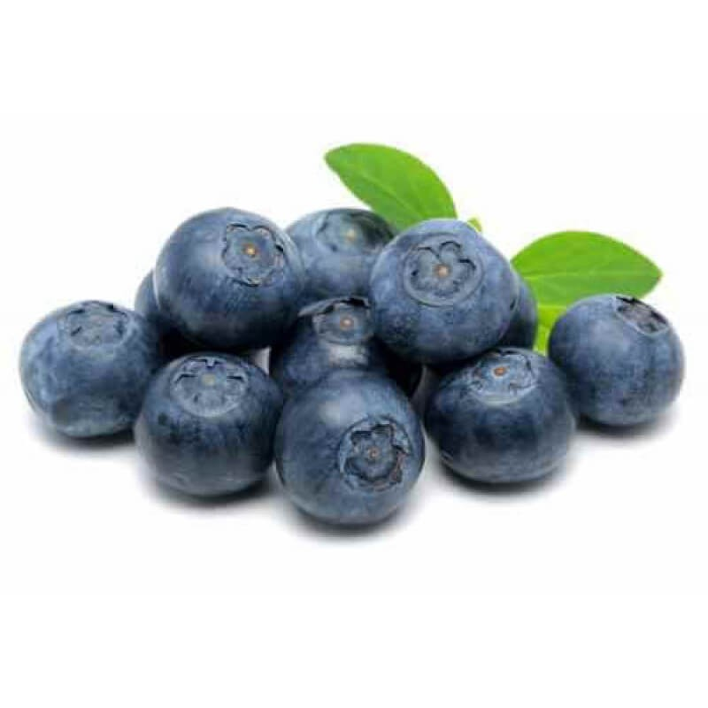

Mustikad on marjad.
Mustikad on maitsvad.
Mulle meeldivad mustikad.

| Punased marjad | Muud värvi marjad | Mittemarjad |
|---|---|---|
| Maasikas | Murakas | Kartul |
| Vaarikas | Mustikas | Seller |
| Punane sõstar | Mustsõstar | Juust |
Rohkem infot mustikakisselli kohta saad siit lehelt